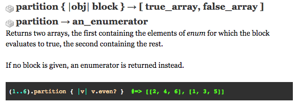

Partition as a Ruby Enumerable
February 1st, 2016
We all know you came here to learn about the Ruby enumerable 'partition' since its mega-awesome!
The don't always make perfect sense at first...

Lets look at this little block of code and break it down. The (1..6) means that the numbers 1 through 6 are in the parenthesis. Partition in the english language means to divide into parts so we know that when we call partition on the numbers 1 through 6, they will be divided in someway. HOW, you ask? Time to move on to the next section of the code.
Between the lines is the 'v', which is a placeholder for each number in the parenthesis. The numbers are the elements. Next, the code asks v.even?. It literally means, is the number even?
Partition, when applied, returns TRUE or FALSE for the element (in this case, the element is 'v'). Based on whether the condition is TRUE or FALSE, the elements (numbers) will be divided into two arrays. Notice that the array that comes first will be the array of TRUE items above in the picture of code.
Let's go through the numbers together:
1 is not even and evaluates to FALSE
=> gets placed into the second array because it is FALSE
We go on to the next number which is 2. 2 is even and evaluates to TRUE
=> gets placed into the first array because it is TRUE
Our array so far is now:
[[2], [1]]
And so it cycles through the numbers until we get the final array
final_array = [[2, 4, 6], [1, 3, 5]]
It doesn't have be just numbers. We could have a hash of dog and cat names all jumbled up (granted, this is a small hash but use your imagination :D)
pets = {"scotty" => "cat", "toby" => "dog", "duchess" => "dog", "furball" => "cat"}
A hash has a key and a value. In this case, the key is the name and the value is the pet type. Using partition, we could say if the value is "cat", then the key is TRUE. Since the only other value is "dog", we know that our FALSE second array will be dog names.
pets.partition {|k,v| v == "cat"}
The idea is that now we have an array of cat names and an array of dog names.
final_array = [["scotty", "furball"], ["toby", "duchess"]]
Partition is also useful if you are only looking for a few values. For example, you have 50 numbers ranging from 0 to 100 but you want to put numbers between 25 and 30 in an array which partition can be useful for!
I hope this was educational and happy Ruby coding (especially since we have enumerables, ;D)!!!